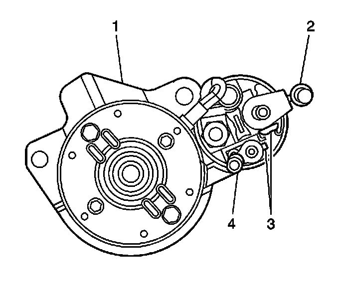
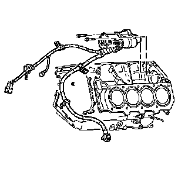

Starter Motor: Service and Repair
Starter Motor Replacement (LH2 - Gas, 8 Cylinder, 4.6L, SFI, V8, DOHC, HO)
Removal Procedure
1. Disconnect the battery negative cable. Refer to Battery Negative Cable Disconnection and Connection (LHD) (Service and Repair)Battery Negative Cable Disconnection and Connection (RHD) (Service and Repair) .
2. Remove the intake manifold. Refer to Intake Manifold Replacement (Service and Repair) .

3. Disconnect the battery positive cable (2) from the starter.
4. Disconnect the wire (4) from the S terminal on the starter.

5. Remove the starter motor bolts.
6. Remove the starter motor from the engine.
Installation Procedure
1. Install the starter motor to the engine.
Notice: Refer to Fastener Notice (Fastener Notice) .
2. Install the starter motor bolts.
Tighten the bolts to 30 N.m (22 lb ft).
3. Connect the wire (4) and nut to the S terminal on the starter.
Tighten the nut to 4 N.m (35 lb in).
4. Connect the battery positive cable (4) and nut to the starter terminal.
Tighten the nut to 10 N.m (89 lb in).
5. Install the intake manifold. Refer to Intake Manifold Replacement (Service and Repair) .
6. Connect the battery negative cable. Refer to Battery Negative Cable Disconnection and Connection (LHD) (Service and Repair)Battery Negative Cable Disconnection and Connection (RHD) (Service and Repair) .